إزاي اتعمل فيديو قصير (43 ثانية) بشخصية بيكسل بتتحرك وبتتكلم مع الصوت — الشخصية وفريماتها بـChatGPT، والأنيميشن والتوقيت والتصدير بـClaude Code.
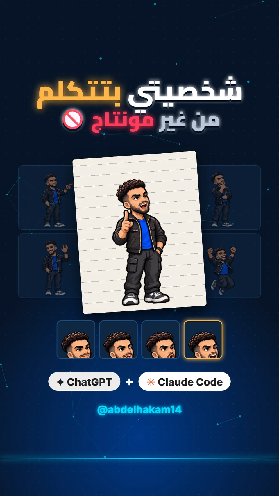
الفكرة · السكريبت · توجيه الذكاء الاصطناعي (الشخصية والفريمات والصوت) · المراجعة والمونتاج النهائي · النشر
Instagram Reels · TikTok · YouTube Shorts
ترند الريلز اللي فيه صانع المحتوى بيحكي «عملت إيه بـClaude Code» خطوة بخطوة. الهدف كان فيديو بنفس الشكل لكن بقصة حقيقية من شغل القناة: إزاي الشخصية بتاعتي بقت بطلة الفيديوهات من غير ما أفتح برنامج مونتاج.
فيديو أقل من دقيقة، الشخصية فيه بتتكلم فعلاً مع الصوت، ويجيب تفاعل.
صناع محتوى ومهتمين بالـAI في مصر والعالم العربي.
«اكتب motion» في الكومنتات ← بيوصله الدليل الكامل والبرومبتات.
| الجزء | الكلام | على الشاشة |
|---|---|---|
| الهوك | «إزاي الشخصية دي بقت بطلة فيديوهاتي… وأنا عمري ما فتحت برنامج مونتاج؟» | الشخصية على ورقة بتتكلم + برنامج مونتاج عليه ✗ |
| ChatGPT | «عملت الشخصية في شات جي بي تي… بكل الحركات، وكل شكل للبُق» | شاشة شات + الحركات بتطلع + أشكال البُق |
| Claude Code | «خليها تتحرك، وتشاور، وتتفاجئ مع الكلام» | شاشة Claude Code فوق معاينة الشخصية |
| الكلام | «اكتب الكلام جنبها… كلمة كلمة» | فقاعة الكلام بتظهر كلمة كلمة |
| الصوت | «ضفت صوتي، وهو ظبط التوقيت على كل كلمة» | موجة صوت + علامات التوقيت |
| القفلة | «اكتب موشن في الكومنتات… وكل ده بدأ من صورة» | كومنت «motion» ← الصورة ترجع ← زرار تابعني |
من صورة شخصية واحدة لشخصية بيكسل آرت، وبعدها شيت كامل بكل الحركات بنفس الشكل والمقاس.
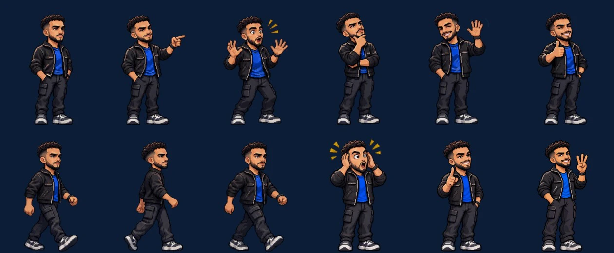
Turn the person in the attached photo into a full-body pixel-art game character. Keep his face, hair, beard and outfit recognizable. Clean pixel-art style with a dark outline, front-facing 3/4 view, standing pose, plain white background, no text.
Using the attached pixel-art character exactly as it is (same style, colors, face, outfit and size), create a sprite sheet on a plain white background with these poses, each full body and the same scale: idle standing, pointing to the side, surprised (hands up), thinking (hand on chin), waving, thumbs up, walking (3 frames), mind-blown (hands on head), celebrating jump, holding up 1 finger, holding up 3 fingers. Evenly spaced grid, no text.
💡 الدرس: رفع صورة الشخصية الأصلية مع كل برومبت هو اللي بيحافظ على نفس الشكل. لما اتولّدت شخصية من غير الصورة الأصلية، طلعت مختلفة واترفضت.
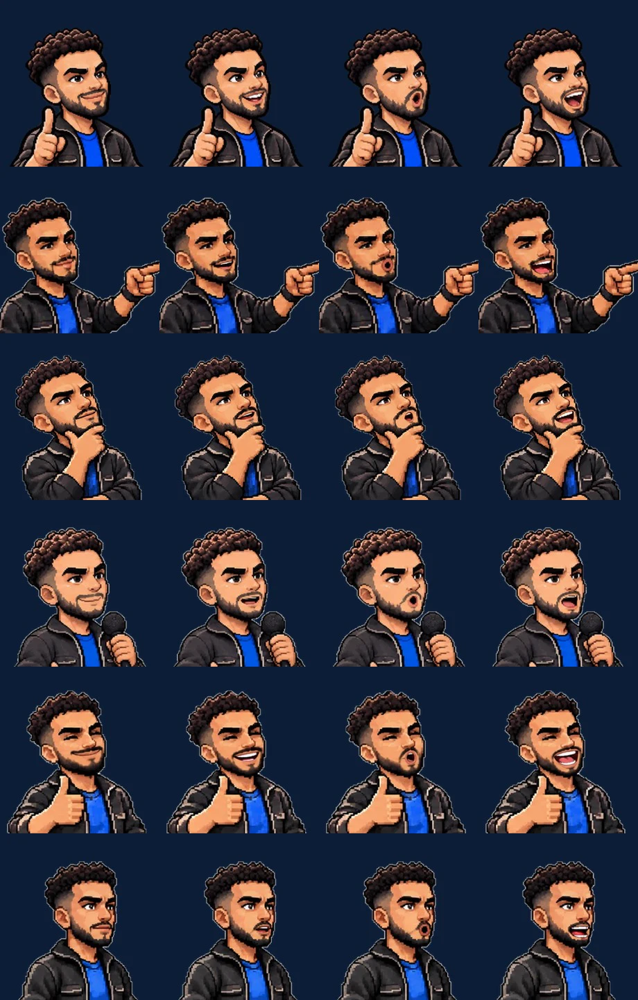
لكل حركة الشخصية بتتكلم فيها، اتولّدت 4 نسخ متطابقة في كل حاجة إلا البُق.
Using the attached pixel-art character exactly as it is (same pose, same pixels, same colors, same outfit), create 4 versions side by side on a plain white background, identical in every way except the mouth: 1) mouth closed (neutral smile), 2) mouth half open, 3) mouth round "O", 4) mouth wide open talking. Same size and position in all 4.
الفيديو كله اتعمل بالكود (Remotion) — وأنا بكلّم Claude Code بالعربي زي ما بكلّم مونتير، وهو بيكتب ويعدّل ويصدّر.
npx skills add remotion-dev/skills # remotion-best-practices · remotion-create · remotion-captions · remotion-markup · remotion-multimedia · remotion-render
| الطلب | اللي حصل |
|---|---|
| «خلّي الشخصية تتحرك وتشاور وتتفاجئ مع الكلام» | جدول حركات مربوط بكلمات معينة في الصوت |
| «اكتب الكلام جنبها كلمة كلمة» | كل كلمة بتظهر وقت ما بتتقال — من غير ما تبيّن اللي جاي |
| «عايز الخلفية والألوان بهوية القناة» | كحلي + شبكة سماوي + تفاصيل دهبي |
| «حاسس إن المقاس مش مظبوط في الريلز» | كل المحتوى اتنقل جوّه المنطقة الآمنة بعيد عن أزرار إنستجرام |
| «زوّد تابعني في الآخر» | زرار + صباع بيدوس + جرس + الـhandle |
🫁 تنفّس خفيف وهي واقفة
🔀 انتقال ناعم بين الحركات
🚶 مشي بـ4 خطوات داخل المعاينة
💥 «بوب» عند كل حركة جديدة
🔊 مؤثرات صوت على كل لحظة مهمة
🔁 النهاية بترجع للبداية (لوب)
اتجرّبت أكتر من نسخة كلون، والإعدادات الأثبت (Eleven v4، ثبات عالي) اتختارت عشان الصوت مايتغيرش في نص الجملة.
كلمة «قلتله» كانت بتتنطق فصحى، فالجملة اتعادت صياغتها لـ«طلبت منه» عشان تتقال مصري صح — والنص على الشاشة اتعدّل معاها.
التوقيتات جاية من ElevenLabs نفسه، وللجملة اللي اتولّدت يدوي استُخدم faster-whisper على الجهاز.
كل الجمل على نفس المستوى، والمزيكا بتوطى تحت الكلام، والنهائي -14 LUFS زي معايير المنصات.
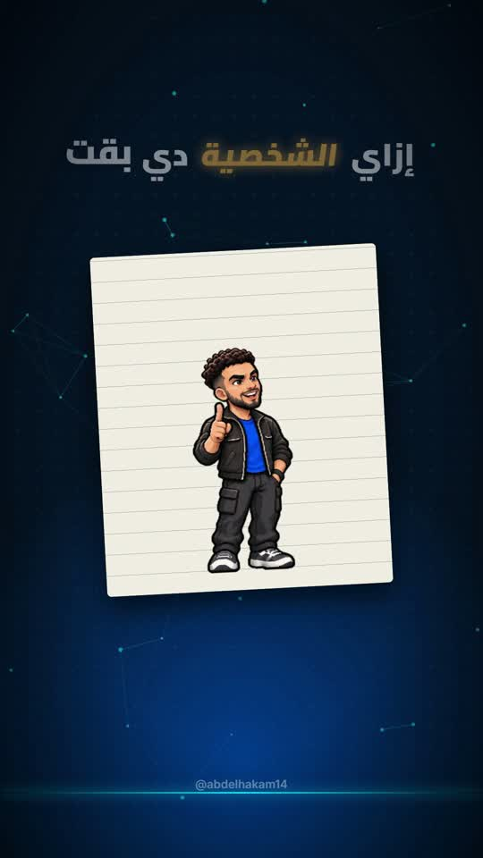
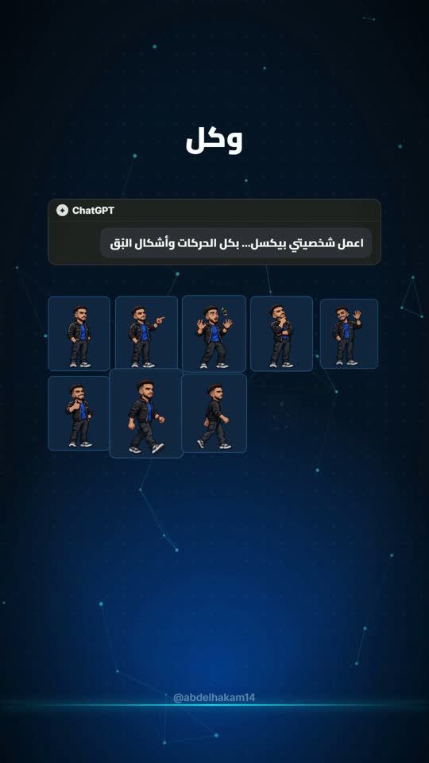
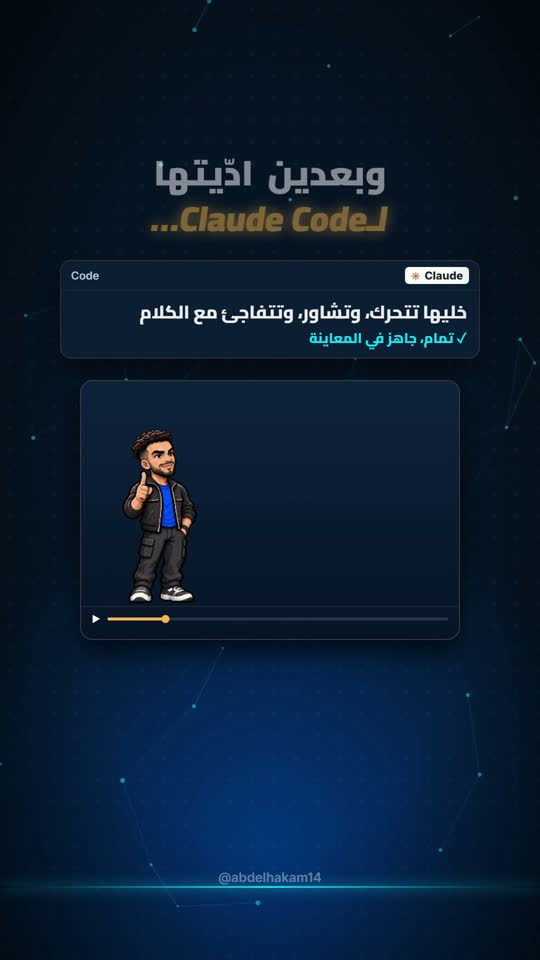
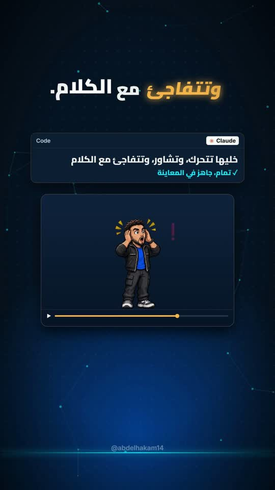
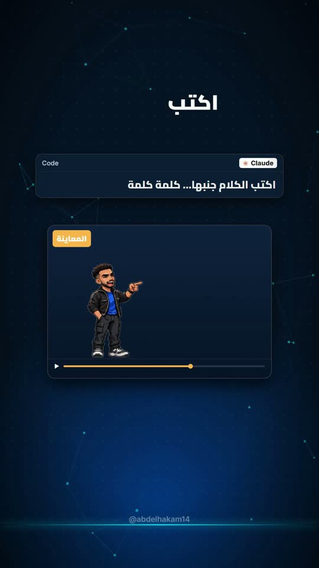
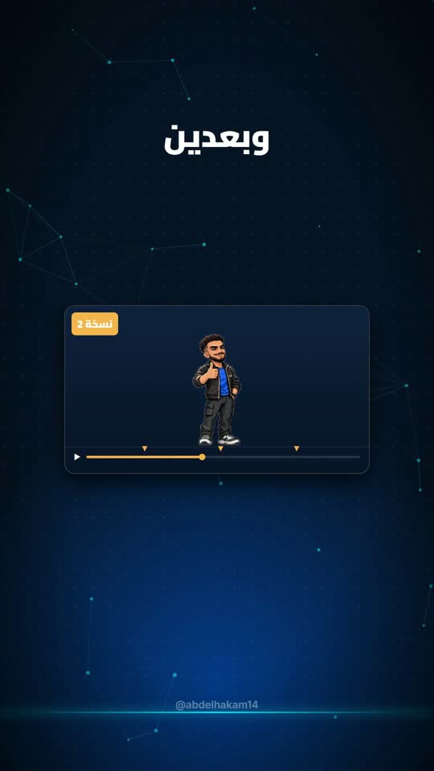
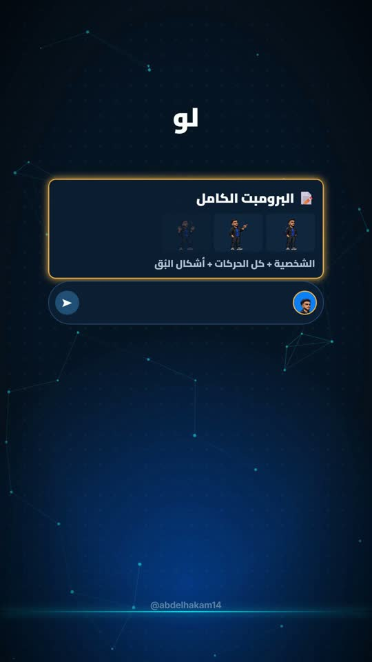
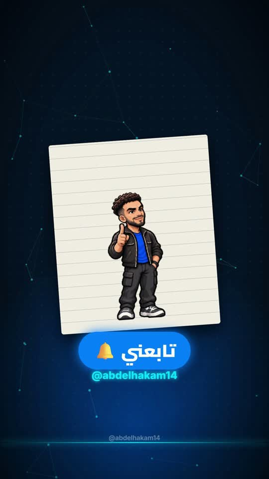
| 🎬 الفيديو النهائي | MP4 · H.264 · 1080×1920 · 30fps · AAC 256k · −14 LUFS · 43s |
| 🖼️ الغلاف | مظبوط على عرض البروفايل في إنستجرام (3:4) |
| 📝 الكابشن والهاشتاجات | نسخة لكل منصة + كومنت مثبّت |
| 📘 الـLead magnet | دليل كامل + رسايل جاهزة للي بيكتب «motion» |
تابع @abdelhakam14 عشان كل جديد في الـAI ⚡